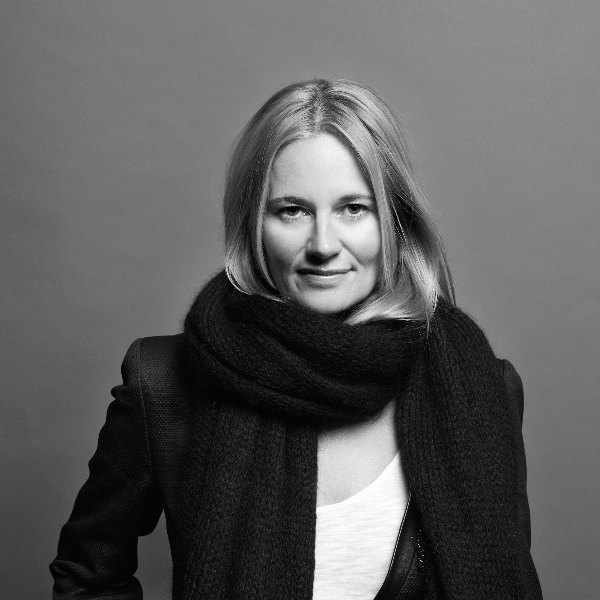

Track-by-track tailored music selection, custom music branding, sound landscapes, original scores, music supervision & licensing. I proudly work for the music, film, luxury, advertising, fashion, hotel industries. I believe in quality music that shapes our culture from within, Music is and always be the focus of my expertise.

Katrin Erichsen developed her musical knowledge from the ground up and received professional training at Polygram (Universal today) in Hamburg. From a young age onwards, everything in her life has revolved around music and ultimately, this heavily influenced her decision to turn passion into a profession in the early stages of her career. From classical to jazz, pop, and electronic music – no music style or development in the international music industry and club culture has gone by Erichsen unnoticed. She feels comfortable navigating any genre. Today, music is her profession and enthusiasm her driving force. Her deep roots in the music business), alongside her good sense for past and future trends, has helped Erichsen build an intertwined network of artists, agencies, and music managers.
Services:
Corporate sound
In-store custom playlists & technical support
Music curation, mixes & playlists
Music consulting/supervising & licensing
Corporate booking
Publishing
Artist & brand management
Katrin Erichsen Music Consulting | Wollinerstraße 49 | 10345 Berlin | email ke@katrinerichsen.com | mobile +49 176 61752207 |
Finanzamt Berlin Mitte | St.- Nr. 34/278/01340 | photo credit Nik@unsplash design & web development Susi Mehl
design & web development Susi Mehl